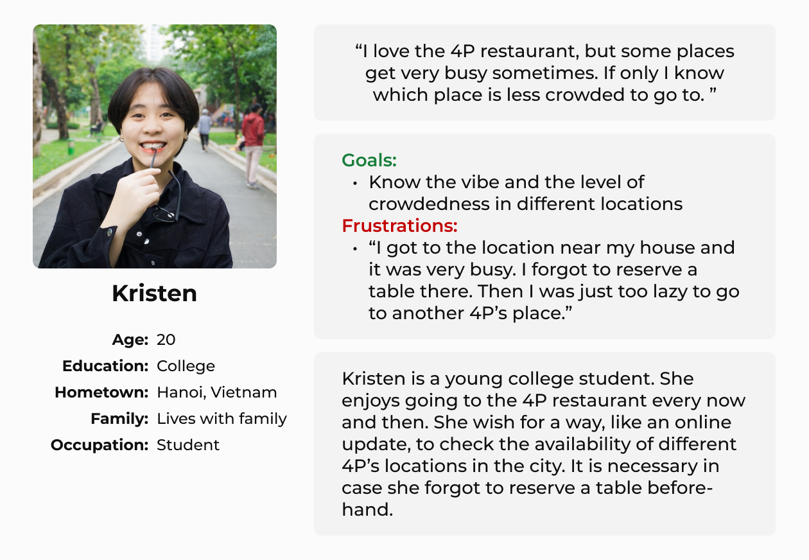
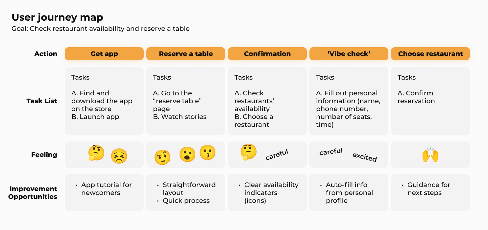
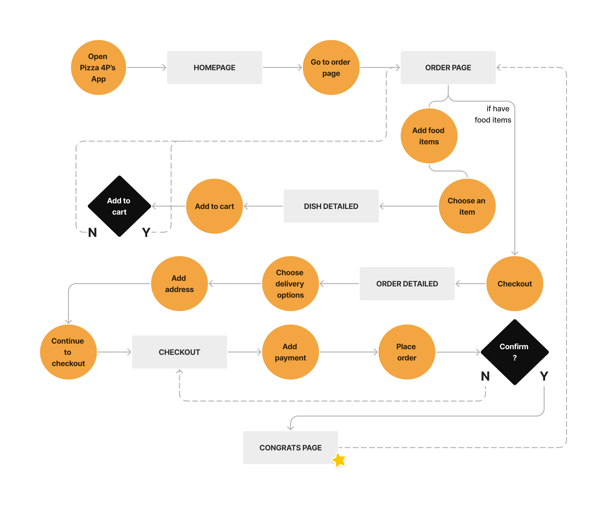
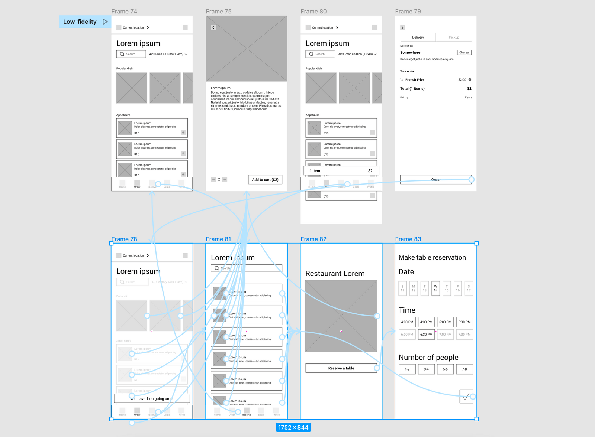
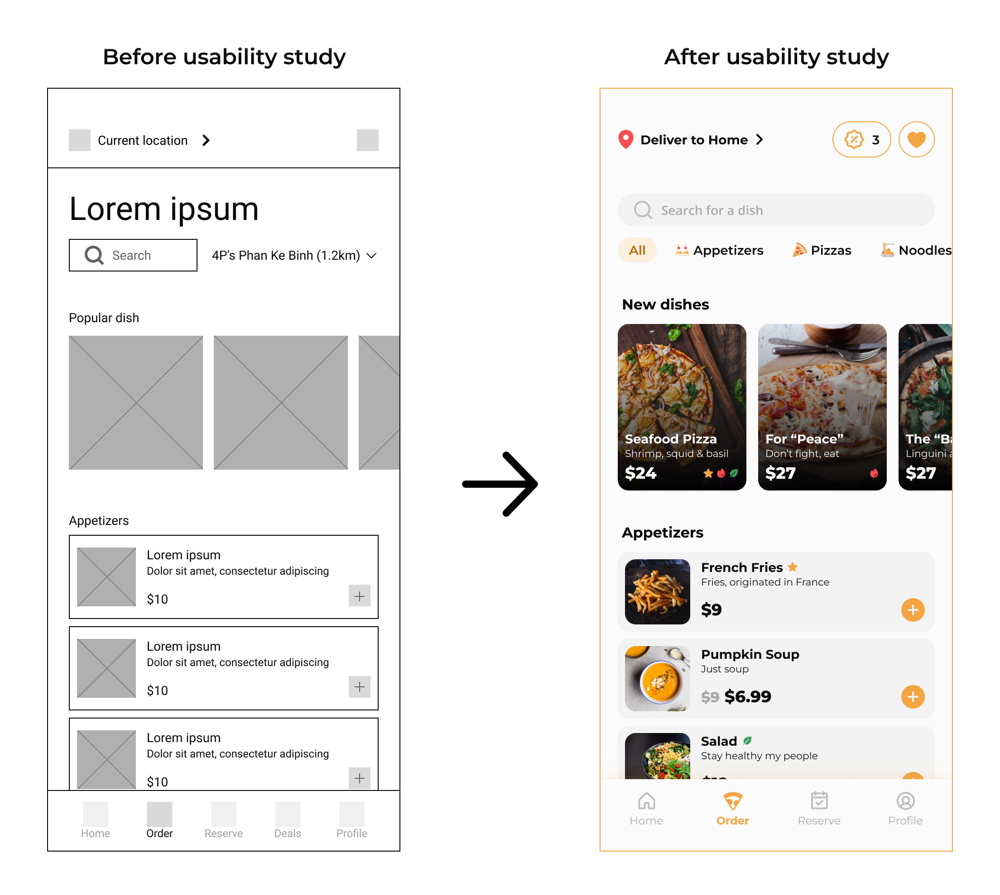
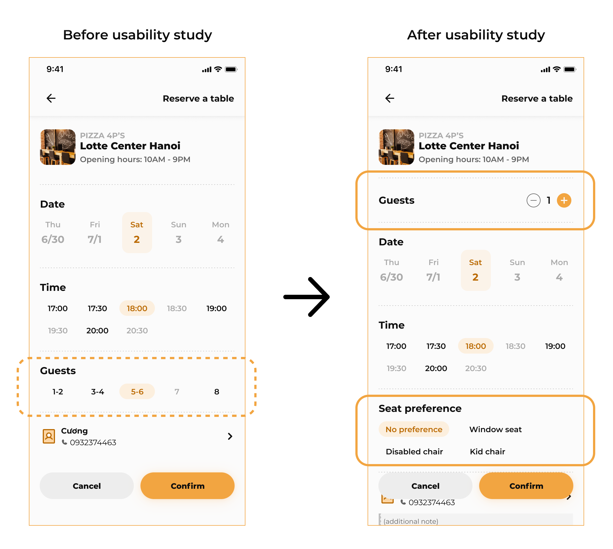
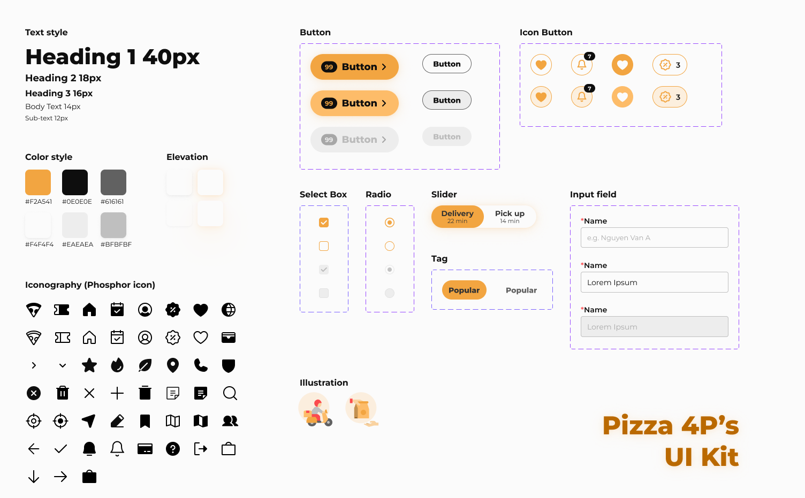
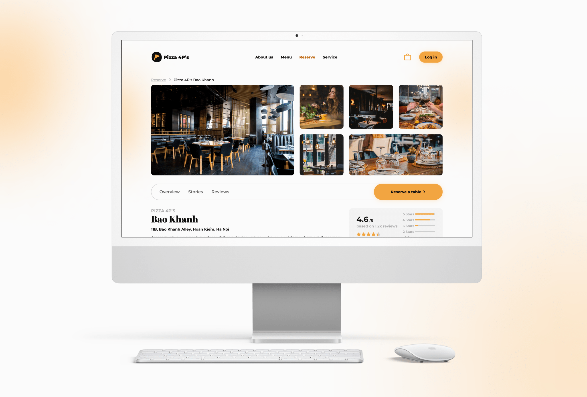

Pizza 4P's Restaurant
Case Study, Web Design, Mobile Design
Project Overview
This is an attempt to reimagine the famous pizza restaurant chain in Vietnam - Pizza 4P's. As a frequent customer I knew that the restaurant lack an online, user-centered service. This prompted me to do some research dedicated to create a specialized app and website that allow users to make online order and table reservation.
My Role
Product Designer
Timeline
06/22 - 07/22
Tools
Figma, Google Suite
Understanding The Problem
Pizza lovers lack the time to go to the restaurant. Sometimes when they do, restaurants are crowded and mostly occupied, Customers also just can't tell that it is crowded beforehand.
The Objectives
An online ordering and table reservations system for customers.
Process
I like to have a clear process when starting a new projects, hence I need a structured framework to follow. With this study case I used a design thinking framework.
— Empathize —
User research summary
The methodology I used was qualitative. I conducted interviews to understand the users I'm designing for and their needs. There are 2 primary user groups identified through research.
• One was working adults who don't have time to cook. Others are frequent customers at the Pizza 4P's.
• The later user group confirmed initial assumptions about Pizza 4P's customers, but research also revealed that there are more problems included interests and challenges that make it difficult to get a table at the restaurants in-person.
— Define —
Competitive Audit
A competitive audit is useful for understanding the user needs and pain points with existing services. I could identify the strengths of our existing competitors, and their weaknesses which I could learn from and avoid.

It's always fast to use a Google Spreadsheet for researching
Persona
This type of character represents the targeted user of my solution for table reservation. It gives me a better sense on who and how will they benefit from this feature.
User Journey Map
The goal is to check restaurant availability and reserve a table through the app.
— Ideate —
User Flow
What about users making an online ordering? I will use a User Flow Chart to describe this activity.
Sketch
Sketches are highly useful for brainstorming and getting my ideas out quickly. These drawings below are iterations for the Order Page in my app. I used stars to signify the different components that I feel would most suitable for the page.
Wireframe + Low fidelity prototype
This is an essential part in my UI design process as I want to get every idea out as basic outline. Then I can make a low fidelity prototype, with which I can carry out a usability study.
Usability Study
I conducted a round of usability study on my first wireframe, which helped guide the designs to complete mockups.
Round 1 Findings:
• Users want to specify their seat preferences
• The plus icons on the list item have no extra functionalities
• Users want to review the restaurant they went to
Refining the Design
After the first study I decided to remove the restaurant indicator. That information is irrelevant for the online ordering. I also add coupons and favourite buttons on top as it provides a nice addition to the experience.
I actually did another round of usability study, but this took place after I finish my mockups (don't panic I will show you my full mockup soon). After the second usability study I found out that sometimes (even though the chances are small), people coming in the diner in a group bigger than 8. The number of guests also affect the time slot, so I re-order the guest picker and change it a number input. I also found that I did not have accessibility in mind during the first iteration, show I made up for that in my refined designs.
Mockups
Behold!
Website Mockups
I approach the design with a Mobile-first process, as I believed that the majority of users prefer to use their phone when making orders and table reservation. However I cannot exclude, for example, the desk workers who do most of their task on the computer, or people who are one-time users that do not feel the need to download the 4P app. We need to make a corresponding website. For the web design process I follow the same framework: Identifying problems, making wireframe and conducting usability studies, and finalizing a complete mockups.
Prototype
To see the prototype of the Pizza 4P's app, follow this link to Figma:
Link to Mobile App Prototype
To see the prototype of the Pizza 4P's website, follow this link to Figma:
Link to Desktop Website Prototype
— Summary —
Accessibility Considerations
I did considered accessibility in my design. It's actually the first time I ever did, and I'm happy that I did this research, because one of the most important thing in user-centered design is, like its name, design a product that is for the people, a product that can be used by every type of people.
Accessibility considerations:
• Adding alt text for screen reader
• Add change language option (English and Vietnamese)
• Add options for disability chairs/kid charis when making table reservation (which I did reflect in my design, yay!)
Takeaways
I learned a lot how keeping the users front and center when making design decisions is beneficial right from the start. Most of the time when you think of solutions for a smaller group of people, the solution will branch out and end up helping every users.